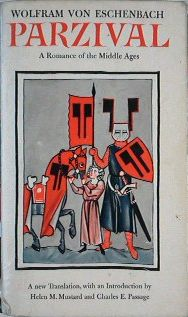
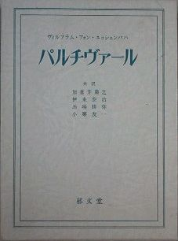
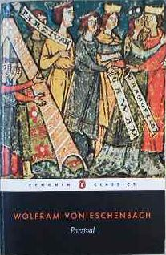

|
|
|
このホームページに載せている物語は、
中世ドイツの吟遊詩人 Wolfram von Eschenbach によって書かれた作品
Parzival の縮小再話版です。
原作があまりにも長く複雑な物語なので、短く読みやすい形にしました。
多くの人にこの作品の趣旨を味わっていただきたいという願いを込めています。
|
聖杯獲得の物語
一言でいえば、パルシファルは、主人公の騎士が聖杯を獲得する物語です。
主人公の父の物語から始まり、主人公の象徴的な子ども時代を通して、聖杯を獲得するまでに成長する姿が描かれています。
聖杯とは、イエス・キリストが最後の晩餐で使用した杯であり、また十字架上のイエスから滴り落ちる血を受け取った器とも言われています。
ところが、この物語では、聖杯は水晶のような丸い石として描写されています。
そこに既に、作者の意図が感じられます。
聖杯とは何か？その謎を解くことを読者に要求している探求型の小説です。
|
Wolfram von Eschenbach, “PARZIVAL”
Translated by H.M.Mustard and C.E.Passage
VINTAGE BOOKS 1961 （絶版の可能性あり）

ヴォルフラム・フォン・エッシェンバッハ 「バルチヴァール」
加倉井粛之、伊東泰治、馬場勝弥、小栗友一訳
郁文堂 1974 （絶版）

Wolfram von Eschenbach, “PARZIVAL”
Translated by A.T.Hatto
PENGUIN CLASSICS 1980 （非推奨）

|
|
|